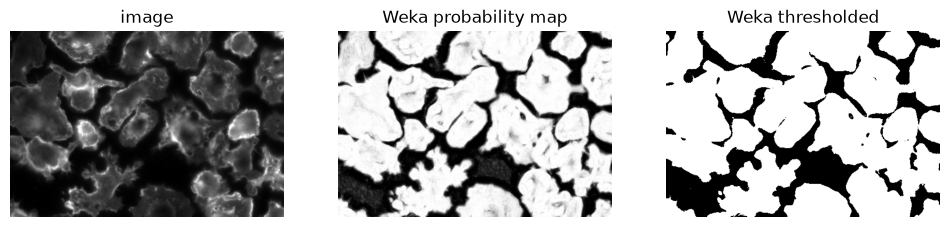
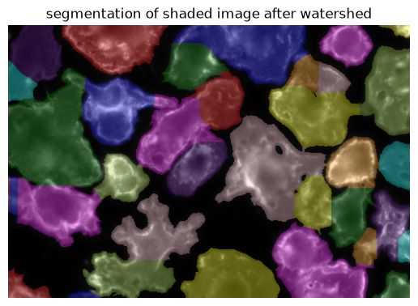
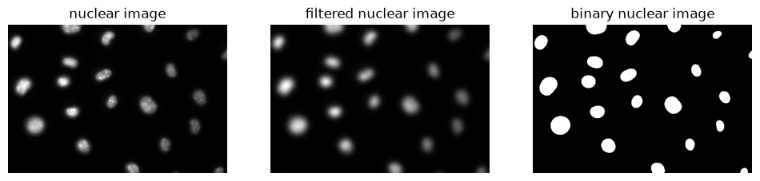
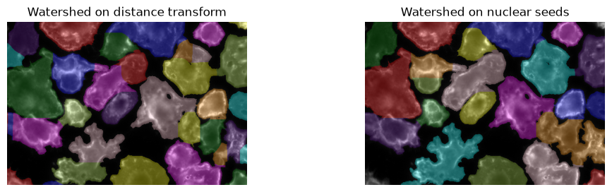
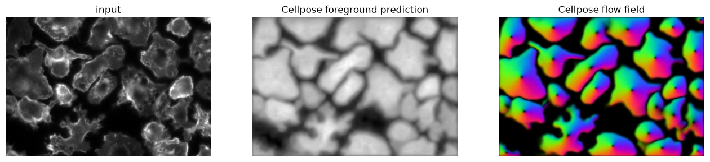
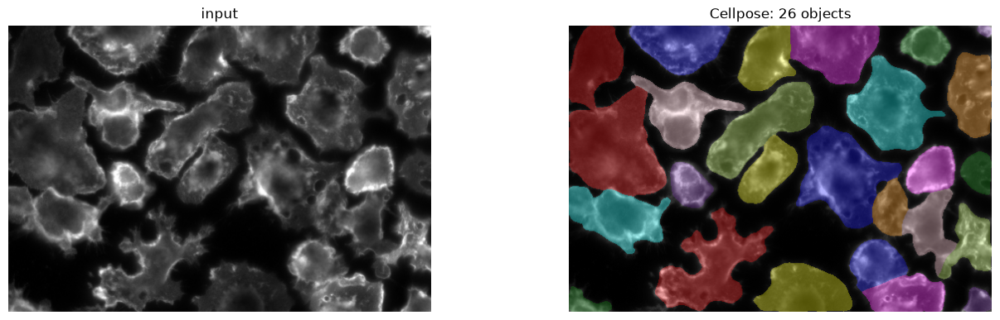
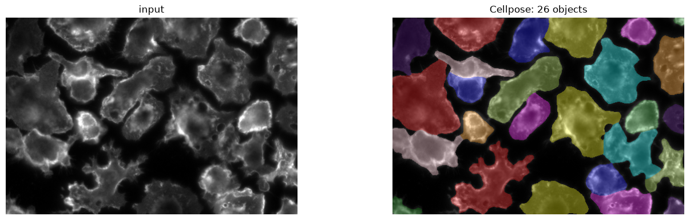

Machine learning for cell segmentation#
Duration ~50 min · Session Day 2, Python notebooks
This notebook covers
loading and interpreting a Weka probability map
what a pixel classifier fundamentally cannot do
running Cellpose, and tuning its one important parameter
Data: data/bbbc020/ and Weka segmentations in data/bbbc020/weka/.
1. Loading a Weka probability map in Python#
import numpy as np
import tifffile
import matplotlib.pyplot as plt
import os; os.environ["DISPLAY"] = ":1"
from skimage.measure import label
from skimage.color import label2rgb
from course import DATA, show
FIELD = "24h_2"
cells = tifffile.imread(DATA / "bbbc020" / "images" / f"{FIELD}_cells.tif")
truth = tifffile.imread(DATA / "bbbc020" / "gt" / f"{FIELD}_cells_labels.tif")
# If you exported your own in E4, point this at results/weka/ instead.
weka_dir = DATA / "bbbc020" / "weka"
probability = tifffile.imread(weka_dir / f"{FIELD}_cells_probability_2.tif")
binary_image = probability[1] > 0.3
fig, axes = plt.subplots(1, 3, figsize=(12, 3))
show(cells, ax=axes[0], title="image")
show(probability[1], ax=axes[1], title="Weka probability map")
show(binary_image, ax=axes[2], title="Weka thresholded")
<matplotlib.image.AxesImage at 0x302218290>

Can we use watershed to separate touching cells?#
from scipy.ndimage import maximum_filter
from skimage.segmentation import watershed
from scipy.ndimage import distance_transform_edt
from skimage.filters import gaussian
def seeds_from_peaks(distance, mask):
"""Return a labeled array of seeds, one for each local maximum in `distance`."""
# maximum filter: replace pixels with the maximum value in a neighborhood
seeds = maximum_filter(distance, size=3)
# Compare the maximum-filtered image with the original distance transform: only keep pixels that are equal to the maximum in their neighborhood.
seeds = (seeds == distance) # True where the pixel is a local maximum
seeds = seeds * mask # only keep seeds that are in the mask
seeds = label(seeds) # label the seeds so that each gets a unique integer
return seeds
distance = distance_transform_edt(binary_image)
smoothed_distance = gaussian(distance, sigma=10.0)
seeds = seeds_from_peaks(smoothed_distance, binary_image)
w = watershed(-smoothed_distance, seeds, mask=binary_image)
show(label2rgb(w, bg_label=0, image=cells), title="segmentation of shaded image after watershed")
<matplotlib.image.AxesImage at 0x302377210>

How about using a nuclear segmentation as a seed for Watershed?#
nuclei = tifffile.imread(DATA / "bbbc020" / "images" / f"{FIELD}_nuclei.tif")
from skimage.filters import threshold_otsu
# watershed on gaussian blurred nuclei image
filtered_nuclei = gaussian(nuclei, sigma=5.0)
t = threshold_otsu(filtered_nuclei)
binary_image_nuclei = filtered_nuclei > t
fig, axes = plt.subplots(1, 3, figsize=(12, 3))
show(nuclei, title="nuclear image", ax=axes[0])
show(filtered_nuclei, title="filtered nuclear image", ax=axes[1])
show(binary_image_nuclei, title="binary nuclear image", ax=axes[2])
<matplotlib.image.AxesImage at 0x302243c50>

distance = distance_transform_edt(binary_image)
smoothed_distance = gaussian(distance, sigma=10.0)
seeds = label(binary_image_nuclei) # use the nuclei as seeds
watershed_nuclear_seeds = watershed(-smoothed_distance, seeds, mask=binary_image)
fig, axs = plt.subplots(1, 2, figsize=(12, 3))
show(label2rgb(w, bg_label=0, image=cells), title="Watershed on distance transform", ax=axs[0])
show(label2rgb(watershed_nuclear_seeds, bg_label=0, image=cells), title="Watershed on nuclear seeds", ax=axs[1])
<matplotlib.image.AxesImage at 0x302c77d10>

Watershed on nuclear is a good way to combine the two types of complementary informations:
the foreground / background cell segmentation
cell identity based on the nuclear segmentation
3. Cellpose#
Cellpose is a deep model trained on a large, varied collection of cell images. Two things make it practical here:
It outputs instances, not a pixel mask: touching cells come out separated.
It generalises. It runs below on images it has never seen, with no additional training.
from cellpose import models
# `cyto` is the general cell model; there is also a `nuclei` model.
model = models.Cellpose(model_type="cyto3", gpu=False)
# diameter=None asks Cellpose to estimate object size itself.
masks, flows, styles, diameter = model.eval(cells, diameter=None, channels=[0, 0])
print(f"estimated diameter : {diameter:.0f} px")
print(f"objects found : {masks.max()}")
print(f"annotated : {truth.max()}")
estimated diameter : 62 px
objects found : 26
annotated : 23
Inspecting the Cellpose output#
fig, axes = plt.subplots(1, 3, figsize=(16, 4.5))
show(cells, title="input", ax=axes[0])
show(flows[2], title="Cellpose foreground prediction", ax=axes[1])
show(flows[0], title="Cellpose flow field", ax=axes[2])
<matplotlib.image.AxesImage at 0x34d54b510>

fig, axes = plt.subplots(1, 2, figsize=(16, 4.5))
show(cells, title="input", ax=axes[0])
show(label2rgb(masks, bg_label=0, image=cells), title=f"Cellpose: {masks.max()} objects", ax=axes[1])
<matplotlib.image.AxesImage at 0x3463ce690>

Cellpose with both channels (nuclei + cytoplasm)#
# Combine the two images into one multichannel image
img = np.stack([cells, nuclei], axis=-1)
# Segment cells using both channels
masks, flows, styles, diameter = model.eval(
img,
diameter=None,
channels=[1, 2],
channel_axis=-1
)
fig, axes = plt.subplots(1, 2, figsize=(16, 4.5))
show(cells, title="input", ax=axes[0])
show(label2rgb(masks, bg_label=0, image=cells), title=f"Cellpose: {masks.max()} objects", ax=axes[1])
<matplotlib.image.AxesImage at 0x34d8de310>

Recap#
Training |
Output |
Separates touching objects |
|
|---|---|---|---|
threshold |
None |
pixels |
no |
Weka |
Manual scribbles |
Semantic segmentation / pixel classes |
no |
Pixel classifier + Watershed |
Depends on the classifier |
Instance segmentation / objects |
yes |
Cellpose |
Large ground truth dataset |
Instance segmentation / objects |
yes |
For cells, Cellpose generally performs very well. However, for non-cell like objects which it has not been trained on, a pixel classifier might be a better choice.